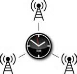

|  |
(Savors) |
Large installations involve huge numbers of interacting components that are subject to a multitude of hardware failures, transient errors, software bugs, and misconfiguration. Monitoring the health, utilization, security, and/or configuration of such installations is a challenging task. While various frameworks are available to assist with these tasks at a high level, administrators must more often than not revert to using command line tools on individual systems to get a low-level understanding of system behavior. The output from such tools can be overwhelming on even a single system, so when taken across a large number of hosts, can become intractable.
Savors is a visualization framework designed to supercharge the command-line tools already used by administrators with powerful visualizations that help them understand the output much more rapidly and with far greater scalability across systems. Savors not only supports the output of existing commands, but does so in a manner consistent with those commands by combining the line-editing capabilities of vi, the rapid window manipulation of GNU screen, the power and compactness of perl expressions, and the elegance of Unix pipelines. Savors was designed to support impromptu visualization, where the user can simply feed in the commands they were already using to create alternate views with optional on-the-fly aggregation of information across many systems. In this way, visualization becomes part of the administrator's standard repertoire of monitoring and analysis techniques with no need for a priori aggregation of data at a centralized resource or conversion of the data into a predefined format.
Savors is unique in its support of all four combinations of single/multiple data streams and single/multiple views. That is, Savors can show any number of data streams either consolidated in the same view or spread out across multiple views. In multi-data scenarios, data streams can be synchronized by time allowing even distributed data streams to be viewed in the same temporal context. In single-data multi-view scenarios, views are updated in lockstep fashion so they show the same data at the same time. Together with its integrated parallelization capabilities, this allows Savors to easily show meaningful results from across even very large installations.